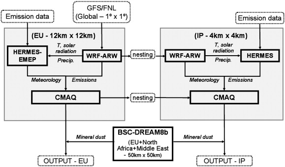

An annual assessment of air quality with the CALIOPE modeling system over Spain
Abstract
The CALIOPE project, funded by the Spanish Ministry of the Environment, aims at establishing an air quality forecasting system for Spain. With this goal, CALIOPE modeling system was developed and applied with high resolution (4 km × 4 km, 1 h) using the HERMES emission model (including emissions of resuspended particles from paved roads) specifically built up for Spain. The present study provides an evaluation and the assessment of the modeling system, coupling WRF-ARW/HERMES/CMAQ/BSC-DREAM8b for a full-year simulation in 2004 over Spain. The evaluation focuses on the capability of the model to reproduce the temporal and spatial distribution of gas phase species (NO2, O3, and SO2) and particulate matter (PM10) against ground-based measurements from the Spanish air quality monitoring network. The evaluation of the modeling results on an hourly basis shows a strong dependency of the performance of the model on the type of environment (urban, suburban and rural) and the dominant emission sources (traffic, industrial, and background). The O3 chemistry is best represented in summer, when mean hourly variability and high peaks are generally well reproduced. The mean normalized error and bias meet the recommendations proposed by the United States Environmental Protection Agency (US-EPA) and the European regulations. Modeled O3 shows higher performance for urban than for rural stations, especially at traffic stations in large cities, since stations influenced by traffic emissions (i.e., high-NOx environments) are better characterized with a more pronounced daily variability. NOx/O3 chemistry is better represented under non-limited-NO2 regimes. SO2 is mainly produced from isolated point sources (power generation and transformation industries) which generate large plumes of high SO2 concentration affecting the air quality on a local to national scale where the meteorological pattern is crucial. The contribution of mineral dust from the Sahara desert through the BSC-DREAM8b model helps to satisfactorily reproduce episodic high PM10 concentration peaks at background stations. The model assessment indicates that one of the main air quality-related problems in Spain is the high level of O3. A quarter of the Iberian Peninsula shows more than 30 days exceeding the value 120 μg m−3 for the maximum 8-h O3 concentration as a consequence of the transport of O3 precursors downwind to/from the Madrid and Barcelona metropolitan areas, and industrial areas and cities in the Mediterranean coast.
Research Highlights
► CALIOPE system advances our understanding of atmospheric dynamics in Spain. ► CALIOPE system uses a high-resolution computational grid. ► CALIOPE system includes the influence of Saharan dust on a non-climatic basis. ► CALIOPE system includes an emission model specifically for Spain. ► CALIOPE system includes resuspension emission from paved roads.
Keywords
- Model evaluation;
- Air quality;
- Spain;
- High resolution;
- O3 exceedances
1. Introduction
In Europe, human health issues caused by degraded air quality have been extensively studied (Brunekreef and Holgate, 2002, Gryparis et al., 2004 and Pénard-Morand et al., 2005) and have motivated the increase of monitoring infrastructures and modeling capabilities. In this sense, the European Commission (EC) and the U.S. Environmental Protection Agency (US-EPA), among others, have shown a great interest in air pollution transport and dynamics. Both entities have set ambient air quality standards for acceptable levels of O3 (US-EPA, 1991 and European Commission, 2008), NO2, SO2, PM2.5 and PM10 in ambient air. According to the European regulations (European Commission, 2008), local to regional air quality models are useful tools to assess and understand the dynamics of air pollutants, to forecast the air quality, and to develop emission abatement plans and alert the population when health-related issues occur.
Air pollution limit values and allowed numbers of exceedances established by the European Commission (2008) are still exceeded in the atmospheric boundary layer in Europe and, particularly, in Spain (de Leeuw and Vixseboxse, 2010). Despite improvements due to European legislations, particulate matter and ground-level ozone remain important pollutants affecting human health (EEA, 2009a, EEA, 2009b and EEA, 2010). The impact of these European policies on the pollutant levels was assessed by the Clean Air for Europe (CAFE) program (Amann et al., 2004 and Cuvelier et al., 2007).
The CALIOPE project, funded by the Spanish Ministry of the Environment (Ministerio de Medio Ambiente y Medio Rural y Marino), aims at establishing an air quality forecasting system for Spain (Baldasano et al., 2008a). CALIOPE (Fig. 1) encompasses a high-resolution air quality forecasting system, namely WRF-ARW/HERMES-EMEP/CMAQ/BSC-DREAM8b, being applied to Europe as a mother domain: 12 km × 12 km, 1 h (Pay et al., 2010a) as well as to Spain as the nested domain: 4 km × 4 km,1 h. Such high resolution of the modeling system is made possible by its implementation on the MareNostrum supercomputer hosted by the Barcelona Supercomputing Center-Centro Nacional de Supercomputación (BSC-CNS). Four Spanish research institutes compose the CALIOPE project: the BSC-CNS, the “Centro de Investigaciones Energéticas, Medioambientales y Tecnológicas” (CIEMAT), the Institute of Earth Sciences Jaume Almera of the “Centro Superior de Investigaciones Científicas ”(IJA-CSIC) and the “Centro de Estudios Ambientales del Mediterráneo” (CEAM). In this project both experimental and operational modeling aspects are conducted by the BSC-CNS and CIEMAT while IJA-CSIC and CEAM lead the data monitoring part for the evaluation processes. Current forecasts are available through http://www.bsc.es/caliope.
- 

- Fig. 1.
Modular structure of the CALIOPE modeling system used to simulate air quality dynamics in Spain. Squared boxes with solid lines represent the main models of the framework. Boxes with dashed lines represent input/output dataset. Lines connecting boxes represent the information flow.
To date, a total of 23 model systems routinely simulate the air quality over Europe, with seven systems also operated in the forecasting mode (Menut and Bessagnet, 2010). Due to the episodic nature of dust outbreaks, the representation of these events cannot be well simulated with solely the information of aerosol boundary conditions (Jiménez-Guerrero et al., 2008a and Menut and Bessagnet, 2010). Vautard et al. (2005a) showed that simulated aerosol loadings, using the current knowledge on aerosol mechanisms, may be underestimated by up to 30–50% if only anthropogenic sources are taken into account. Among the seven operational systems CALIOPE is the unique system including the contribution of Saharan dust on an hourly basis. In addition, CALIOPE includes the High-elective Resolution Modelling Emission System (HERMES, see Baldasano et al., 2008b) specifically applied with high resolution over Spain.
Several studies investigated air quality concerns over selected areas in Spain (San José et al., 1999, Jiménez-Guerrero et al., 2008b and Vivanco et al., 2008) or over the entire Peninsula (Baldasano et al., 2008a, Jiménez-Guerrero et al., 2008a and Vivanco et al., 2009). Most models ran with horizontal cell resolution of 18 km × 18 km or coarser for domains covering the Spanish territory. CALIOPE now uses a 4 km × 4 km cell resolution to simulate the Iberian Peninsula domain. Such high resolution is a key factor to accurately simulate air pollution issues, especially over complex topography (Jiménez et al., 2006) and meteorology patterns (Baldasano et al., 1994 and Millán et al., 2002) in southern Europe.
The present paper provides a quantitative performance assessment of the CALIOPE modeling system to simulate the air quality in Spain (gas phase and particulate matter). As the HERMES emission database was compiled for the year 2004 the evaluation was carried out over this year. The performance of the modeling system is evaluated by means of comparisons with ground-based observations from the Spanish network hereinafter referred to as “RedESP” (source: CEAM, see Fig. 2). The model dynamics are evaluated together with the corresponding statistics. The results are then compared to model performance goals and criteria. This study intends to warrant the suitability of CALIOPE over Spain for air quality concerns and forecast.

- Fig. 2.
RedESP stations measuring air pollutants in Spain on an hourly basis in 2004. Different types of stations (U: Urban; S: Suburban; R: Rural; B: Background; I: Industrial; and T: Traffic) according to Garber et al. (2002) are represented by symbols and color codes. The various symbols represent the major emission types affecting each station (Traffic: triangle; Industrial: square; and Background: circle) while the colors reflect the environment of each station (Urban: red; Suburban: green; and Rural: orange). Characteristics and number of each station are listed in Table 1.
Section 2 describes the different models used in the CALIOPE system, the observational dataset and the statistical parameters calculated. Section 3 analyzes the results against available observations for the year 2004 and the modeled annual distribution of NO2, O3, SO2 and PM10. A discussion about the exceedances of O3 during summertime is shown in Section 4. The conclusions are drawn in Section 5.
2. Methods
2.1. System Description
The CALIOPE air quality system is a state-of-the-art modeling framework. As shown in Fig. 1, CALIOPE is a complex system that integrates the meteorological model: WRF-ARW, the emission model: HERMES, the chemical transport model: CMAQ, and the mineral dust atmospheric model: BSC-DREAM8b offline coupled in an air quality forecasting system (Baldasano et al., 2008a).
The Advanced Research Weather Research and Forecasting (WRF-ARW) model v3.0.1.1 (Michalakes et al., 2004 and Skamarock and Klemp, 2008) provides the meteorology fields required by the chemical transport model. For the Spanish domain WRF-ARW is configured with a grid of 397 × 397 points corresponding to a 4 km × 4 km horizontal resolution and 38 σ vertical levels with 11 characterizing the planetary boundary layer (PBL). The model top is defined at 50 hPa to resolve the troposphere–stratosphere exchanges properly. Details about the performance of WRF-ARW over the Spanish domain are provided as supplementary material.
The Models-3 Community Multiscale Air Quality Modeling System (Models-3/CMAQ, Byun and Ching, 1999, Binkowski, 1999 and Byun and Schere, 2006), v4.5 is used to study the behavior of air pollutants from regional to local scales, due to its generalized coordinate system and its advanced nesting grid capability. It includes gas, aerosol and heterogeneous chemistry. According to the work by Jiménez et al. (2003) the gas-phase chemistry mechanism used in this study is the Carbon Bond IV (CBM-IV, Gery et al., 1989). The version of CBM-IV mechanism is that presented in CMAQv4.5 original code (Appel et al., 2007 and Appel et al., 2008) which introduces some changes and updates in the original CBM-IV mechanism such as an update isoprene chemistry to Carter's one product form (Carter, 2000) and an inclusion of gaseous species that are necessary to link gas-phase chemistry to aerosol formation.
The aerosols are modeled using the AERO4 module (Binkowski and Roselle, 2003). This module comprises the following aerosol components: nitrate, sulfate, ammonium, elemental and organic carbon (with three subcomponents: primary, secondary anthropogenic and secondary biogenic), soil, sodium, and chlorine. Unspecified anthropogenic aerosols and aerosol water are additionally kept as separate components. Aerosols are represented by a three size modes (Aitken, accumulation and coarse mode) each of them assumed to have a lognormal distribution. The coarse particles mode is treated as dry and chemically inert with a fixed geometric standard deviation of 2.2 (Kelly et al., 2010), thus there is no dynamic interaction between the fine and coarse mode. The production of sea salt aerosol (SSA) is implemented as a function of wind speed and relative humidity (Gong, 2003 and Zhang et al., 2005) through the AERO4 aerosol module.
Secondary inorganic aerosols (SIA) are generated by nucleation processes from their precursors to form nitrate ammonium and sulfate aerosols. The thermodynamic equilibrium between gas and inorganic fine aerosols is determined by the ISORROPIA model (Nenes et al., 1998). Secondary Organic Aerosols (SOA) are simulated following a traditional 2-product SOA model (Binkowski and Roselle, 2003) where SOA concentrations are yield from the oxidation of six primary organic gases: alkanes, alkenes, cresol, high-yield aromatics, low yield aromatics, and monoterpenes. Ten semi-volatile organic compounds are produced via these reactions—two each for olefins, monoterpenes, and aromatics, and one each for alkanes and cresol. The oxidants include the hydroxyl radical, the nitrate radicals, and ozone. The saturation vapor pressures and mass-based stoichiometric yield coefficients of semi-volatile organic compounds are obtained from either smog chamber experiments or from published estimates in cases where smog chamber data are unavailable. The SOA is calculated using the method developed by Schell et al. (2001) and gas and aerosol-phase concentrations of each semi-volatile organic compounds are calculated iteratively using a globally convergent variation of Newton's method. The formation rates of aerosol mass (in terms of the reaction rates of the precursors) are taken from Pandis et al. (1992).
Aerosol deposition is treated by a second-generation deposition velocity scheme (Binkowski and Shankar, 1995 and Venkatram and Pleim, 1999). For a more complete description of the processes implemented in CMAQ see Byun and Schere (2006).
The CMAQ horizontal grid resolution corresponds to that of WRF. Its vertical structure was obtained by a collapse from the 38 WRF layers to a total of 15 layers steadily increasing from the surface up to 50 hPa with a stronger density within the PBL.
In order to provide adequate boundary and initial conditions to the IP domain the CALIOPE modeling system was initially run on a regional scale (12 km × 12 km in space and 1 h in time) to model the European domain (mother domain). Chemical boundary conditions for this domain were provided by the global climate chemistry model LMDz-INCA2 (Hauglustaine et al., 2004 and Folberth et al., 2006). A detailed evaluation of the European simulation was recently presented in the companion paper by Pay et al. (2010a). A one-way nesting was then performed to retrieve the meteorological and chemical conditions for the IP domain (see Fig. 1).
As highlighted by Lam and Fu (2009) stratospheric amounts of O3 interpolated from global chemical models and provided to the chemical lateral profiles may cause problems since CMAQ does not include a cross-tropopause exchange mechanism. Following their suggestion the stratospheric contribution of O3 from the mother domain was suppressed from the chemical boundary conditions to avoid inconsistent intrusions of stratospheric O3 down to the surface.
The HERMES model (Baldasano et al., 2008b) uses information and state-of-the-art methodologies for emission estimations. It calculates emissions by sector-specific sources or by individual installations and stacks. Emissions used for Spain are derived from the aggregation in space from 1 km × 1 km dataset to 4 km × 4 km. Raw emission data are processed by HERMES in order to provide a comprehensive description of the emissions to the air quality model. In this study estimated emissions are expressed in CBM-IV speciation.

{kind=link}
{kind=link}